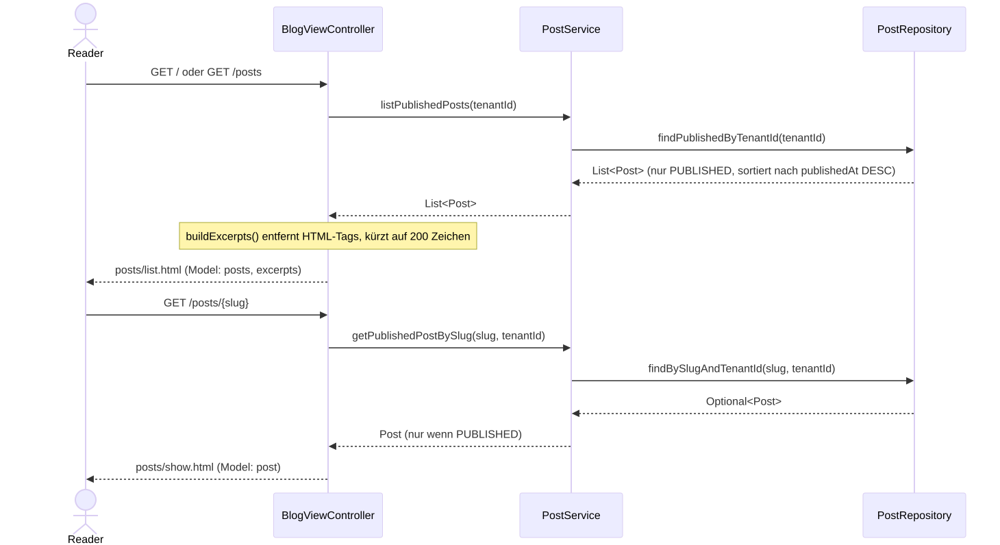
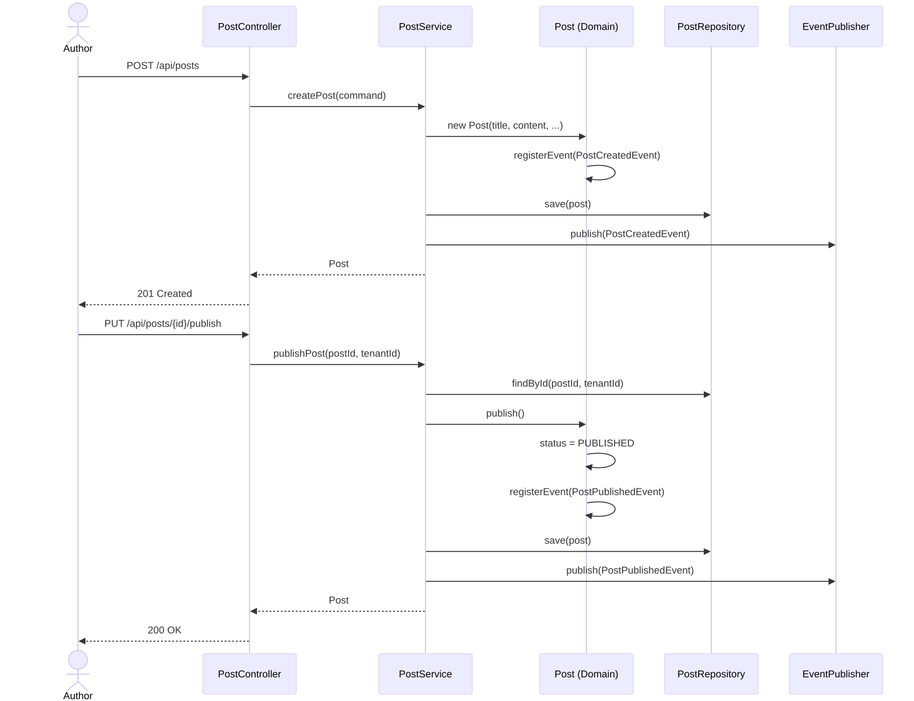

Blog Content Service: Detail Design
- 1. Überblick
- 2. Domain-Modell
- 3. Application Layer
- 4. Adapter Layer
- 5. Datenbank-Schema (Flyway)
- 6. Ablauf: Post erstellen und veröffentlichen
- 7. Konfiguration
- 8. Anforderungsabdeckung
- 9. Sicherheit: Admin-Login (SWR-028)
1. Überblick
Der Blog Content Service ist der zentrale Service für die Verwaltung von Blog-Inhalten. Er implementiert die Post-CRUD-Operationen (SWR-001), das Veröffentlichen von Posts (SWR-002), Tenant-Isolation (SWR-003), Quellenverwaltung mit Web-Snapshots (SWR-012, SWR-013) und den Audit-Trail (SWR-006).
Die Architektur folgt der hexagonalen Architektur (SWA-001) mit einer klaren Trennung von Domain, Application und Adapter Layer. Gemeinsame Domain Primitives wie EntityId, TenantId und AggregateRoot stammen aus dem Shared Kernel (SWA-002).
2. Domain-Modell
Das Domain-Modell basiert auf DDD-Prinzipien mit Aggregates, Entities und Value Objects (SWA-007). Das folgende Diagramm zeigt die Klassenstruktur des Domain Layers:

2.1. Post Aggregate
Das Post-Aggregate ist das zentrale Aggregate Root und kapselt die gesamte Fachlogik rund um Blog-Posts.
Es erfüllt die Anforderungen SWR-001 (CRUD-Operationen) und SWR-002 (Veröffentlichung).
Jeder Post ist einem Tenant zugeordnet (SWR-003) und registriert bei Zustandsänderungen Domain Events (SWR-009), die für die serviceübergreifende Kommunikation genutzt werden.
2.2. Translation Aggregate
Das Translation-Aggregate hat gemäß SWA-008 einen eigenen Lifecycle, der unabhängig vom Post verwaltet wird.
Es unterstützt sowohl manuelle Übersetzungen (SWR-005) als auch KI-gestützte Übersetzungen (SWR-004).
Der Übersetzungsprozess durchläuft die Status DRAFT → REVIEW_PENDING → APPROVED/REJECTED, sodass eine Qualitätskontrolle gewährleistet ist.
3. Application Layer
Der Application Layer definiert die Ports und Use Cases gemäß der hexagonalen Architektur (SWA-001). Das folgende Diagramm zeigt die Zusammenhänge:

3.1. Inbound Ports
Das Interface PostUseCase definiert alle fachlichen Operationen, die der Service nach außen anbietet.
Es bildet die Grundlage für die REST-API (SWR-001) und stellt sicher, dass die Fachlogik unabhängig vom Aufrufkontext bleibt.
Das Interface TagUseCase kapselt die Tag-Verwaltung (SWR-020) mit Operationen für Erstellen, Umbenennen, Löschen und Lesen.
Das Interface TranslationUseCase kapselt den Übersetzungs-Workflow (SWR-021) inklusive manueller und KI-gestützter Erstellung sowie Freigabe und Ablehnung.
3.2. Outbound Ports
Die Outbound Ports PostRepository, TagRepository, TranslationRepository und EventPublisher abstrahieren die technischen Abhängigkeiten.
PostRepository stellt die Persistenz sicher, wobei alle Abfragen Tenant-scoped sind (SWR-003).
TagRepository bietet zusätzlich eine Duplikat-Prüfung über existsByTenantIdAndName() (SWR-020).
TranslationRepository unterstützt Abfragen nach PostId und Locale (SWR-021).
EventPublisher ermöglicht die asynchrone Kommunikation via Domain Events (SWR-009).
3.3. PostService
Der PostService orchestriert Domain-Objekte und Ports. Er sorgt dafür, dass bei jeder Post-Erstellung ein PostCreatedEvent und bei jeder Veröffentlichung ein PostPublishedEvent publiziert wird.
3.4. TagService
Der TagService implementiert den TagUseCase und prüft vor der Tag-Erstellung, ob bereits ein Tag mit gleichem Namen im Tenant existiert.
Bei Duplikat wird eine IllegalArgumentException geworfen. Das Umbenennen delegiert an die Domain-Methode Tag.rename(), die den Slug automatisch aktualisiert.
4. Adapter Layer
Der Adapter Layer implementiert die technische Anbindung an Spring Boot (SWA-004) und externe Systeme.
4.1. Inbound Adapter: REST API
4.1.1. PostController
Der PostController bildet den REST Inbound Adapter und setzt die in SWR-001 definierten Endpunkte um:
| HTTP-Methode | Pfad | Beschreibung |
|---|---|---|
POST |
/api/posts |
Post erstellen |
GET |
/api/posts/{id} |
Post lesen |
PUT |
/api/posts/{id} |
Post aktualisieren |
DELETE |
/api/posts/{id} |
Post löschen |
PUT |
/api/posts/{id}/publish |
Post veröffentlichen (SWR-002) |
4.1.2. TagController
Der TagController setzt die Tag-Verwaltungs-API (SWR-020) um:
| HTTP-Methode | Pfad | Beschreibung |
|---|---|---|
POST |
/api/tags |
Tag erstellen |
GET |
/api/tags |
Alle Tags des Tenants auflisten |
GET |
/api/tags/{id} |
Einzelnen Tag lesen |
PUT |
/api/tags/{id} |
Tag umbenennen |
DELETE |
/api/tags/{id} |
Tag löschen |
4.1.3. TranslationController
Der TranslationController setzt die Übersetzungs-API (SWR-021) als Sub-Ressource von Posts um:
| HTTP-Methode | Pfad | Beschreibung |
|---|---|---|
POST |
/api/posts/{postId}/translations |
Übersetzung erstellen (manuell oder KI) |
GET |
/api/posts/{postId}/translations |
Alle Übersetzungen eines Posts |
GET |
/api/posts/{postId}/translations/{id} |
Einzelne Übersetzung lesen |
PUT |
/api/posts/{postId}/translations/{id} |
Übersetzung aktualisieren |
POST |
/api/posts/{postId}/translations/{id}/approve |
Übersetzung freigeben |
POST |
/api/posts/{postId}/translations/{id}/reject |
Übersetzung ablehnen |
DELETE |
/api/posts/{postId}/translations/{id} |
Übersetzung löschen |
4.1.4. SourceController
Der SourceController setzt die Quellenverwaltungs-API (SWR-012) als Sub-Ressource von Posts um:
| HTTP-Methode | Pfad | Beschreibung |
|---|---|---|
POST |
/api/posts/{postId}/sources |
Quelle hinzufügen |
GET |
/api/posts/{postId}/sources |
Alle Quellen eines Posts auflisten |
DELETE |
/api/posts/{postId}/sources |
Quelle entfernen (URL+Title im Body) |
Die Tenant-ID wird über einen HTTP-Header (X-Tenant-Id) übergeben, um die Tenant-Isolation (SWR-003) auf API-Ebene sicherzustellen.
Fehler werden über den GlobalExceptionHandler als Problem Details nach RFC 9457 zurückgegeben. Input-Validierung erfolgt gemäß SWR-015 zum Schutz vor ungültigen Eingaben.
4.1.5. OpenAPI/Swagger-Konfiguration
Die automatische API-Dokumentation (SWR-024) wird über springdoc-openapi (SWA-016) realisiert. Die OpenApiConfiguration enthält:
-
API-Metadaten (Titel, Version, Beschreibung)
-
Einen globalen
OperationCustomizer, der denX-Tenant-Id-Header automatisch als optionalen Parameter zu allen Operationen hinzufügt
Alle Controller verwenden die folgenden Swagger-Annotationen:
-
@Tagzur Gruppierung der Endpunkte (Posts, Tags, Translations, Sources) -
@Operationmit Summary und Beschreibung für jede Methode -
@ApiResponsefür die möglichen HTTP-Statuscodes -
@Parameter(hidden = true)auf dem X-Tenant-Id-Header-Parameter, da dieser global dokumentiert wird
Die Spezifikation ist unter /api-docs (JSON) und die interaktive Oberfläche unter /swagger-ui.html erreichbar.
4.2. Inbound Adapter: Thymeleaf Web UI
Der Thymeleaf Web UI Adapter (SWR-025) stellt die serverseitig gerenderte Benutzeroberfläche bereit. Er bildet einen separaten Inbound Adapter neben der REST API und nutzt dieselben Application Ports.
4.2.1. Architektur

Der BlogViewController liegt im Package adapter.inbound.web und greift über die bestehenden Inbound Ports (PostUseCase) auf die Fachlogik zu.
Er gibt Thymeleaf-View-Namen zurück, die vom Spring MVC ViewResolver aufgelöst werden.
Die PostFormData-Klasse dient als Form-Backing-Bean für die Thymeleaf-Formulare und kapselt die Eingabefelder mit Bean-Validation-Annotationen.
4.2.2. Öffentliche Blog-Ansicht (SWR-026)
Die öffentliche Blog-Ansicht besteht aus zwei Seiten:
-
Post-Liste (
/und/posts): Zeigt alle veröffentlichten Posts des Tenants in absteigender chronologischer Reihenfolge (neueste zuerst). Pro Eintrag werden Titel, Veröffentlichungsdatum und eine Klartext-Vorschau (max. 200 Zeichen, HTML-Tags entfernt) angezeigt. Die Landing Page (/) und/postsnutzen dieselbe View. -
Einzelansicht (
/posts/{slug}): Zeigt einen einzelnen veröffentlichten Post mit Titel, Veröffentlichungsdatum, Volltext, Quellen und Tags.
Nicht veröffentlichte Posts (DRAFT, ARCHIVED) sind in der öffentlichen Ansicht nicht sichtbar. Die Slug-basierte URL sorgt für SEO-freundliche, leserliche Adressen.
Die buildExcerpts()-Methode im Controller entfernt HTML-Tags via Regex und kürzt den Text auf 200 Zeichen, um eine saubere Vorschau ohne Markup darzustellen.

Für die öffentliche Ansicht werden zwei neue Methoden am PostRepository-Port benötigt:
-
findPublishedByTenantId(TenantId)- Gibt alle veröffentlichten Posts zurück, sortiert nachpublishedAtabsteigend. -
findBySlugAndTenantId(Slug, TenantId)- Sucht einen Post anhand seines Slugs.
Am PostUseCase-Port werden entsprechend zwei neue Methoden definiert:
-
listPublishedPosts(TenantId)- Delegiert an das Repository und gibt nur PUBLISHED-Posts zurück. -
getPublishedPostBySlug(Slug, TenantId)- Gibt den Post zurück, wenn er existiert und den Status PUBLISHED hat. WirftPostNotFoundExceptionfalls nicht gefunden oder nicht veröffentlicht.
4.2.3. Formular zum Erstellen und Bearbeiten von Posts (SWR-027)
Das Formular ermöglicht das Erstellen neuer Posts und das Bearbeiten bestehender Posts über eine einheitliche Template-Datei (posts/form.html).
Es nutzt die bestehenden Inbound Ports PostUseCase.createPost() und PostUseCase.updatePost().
Form-Backing-Bean
Die Klasse PostFormData kapselt die Formulareingaben und stellt die serverseitige Validierung über Bean Validation sicher:
-
title(NotBlank) - Titel des Posts -
content(NotBlank) - Inhalt des Posts -
locale(NotBlank) - Sprache des Posts (z.B. "de", "en") -
socialMediaTitle(optional) - Titel für Social Media -
socialMediaSummary(optional) - Zusammenfassung für Social Media
4.2.4. Template-Struktur
Die Templates folgen einer hierarchischen Struktur mit dem Thymeleaf Layout Dialect:

-
layout/default.html: Basis-Layout mit HTML5-Grundgerüst, PicoCSS-Einbindung (CDN), semantischer Struktur (header, nav, main, footer)
-
fragments/header.html: Seitenkopf mit Blog-Titel und Navigationslinks (inkl. Link auf /posts)
-
fragments/footer.html: Fußzeile mit Copyright und Links
-
posts/list.html: Post-Liste (dient auch als Landing Page), mit
th:eachüber die Posts (SWR-026), Klartext-Vorschau ausexcerpts-Map, Links zum Erstellen und Bearbeiten (SWR-027) -
posts/show.html: Einzelansicht eines Posts mit vollem Inhalt, Quellen und Tags (SWR-026)
-
posts/form.html: Wiederverwendbares Formular für Erstellen und Bearbeiten eines Posts (SWR-027)
4.2.5. Default-Tenant-Filter (MVP-Betrieb)
Der DefaultTenantFilter injiziert automatisch Default-Werte für X-Tenant-Id und X-Author-Id, wenn diese HTTP-Header in der Anfrage fehlen.
Die Werte sind über Spring-Properties konfigurierbar (blog.default-tenant-id, blog.default-author-id).
Dies ermöglicht den produktiven MVP-Betrieb als Single-Tenant-Blog, ohne dass ein API-Gateway oder eine Authentifizierung vorgeschaltet sein muss. In Phase 4 wird dieser Filter durch domain-basierte Tenant-Resolution (ADR-0012) und Authentifizierung ersetzt.
4.2.6. CSS-Framework: PicoCSS
PicoCSS (v2.x) wurde als classless CSS-Framework gewählt (ADR-0005). Es bietet:
-
Responsives Design ohne CSS-Klassen (semantic HTML genügt)
-
Dark/Light Mode via
prefers-color-scheme -
~10 KB Größe, kein Frontend-Build-Tooling erforderlich
-
Einbindung via CDN (
unpkg.com/\@picocss/pico@2/css/pico.min.css)
Eine zusätzliche custom.css ermöglicht minimale Anpassungen und Tenant-Branding-Hooks.
4.3. Outbound Adapter: JPA Persistence
4.3.1. JpaPostRepository
Der JpaPostRepository implementiert den PostRepository-Port mit Spring Data JPA.
Die PostJpaEntity enthält Audit-Felder (createdAt, updatedAt), die über @PrePersist und @PreUpdate automatisch befüllt werden und den Audit-Trail (SWR-006) auf Datenbankebene unterstützen.
Der PostMapper übernimmt das bidirektionale Mapping zwischen Domain-Modell und JPA-Entity, sodass die Domain-Schicht frei von JPA-Annotationen bleibt (SWA-001).
4.3.2. JpaTagRepository
Der JpaTagRepository implementiert den TagRepository-Port. Die TagJpaEntity bildet die tags-Tabelle ab mit Unique-Constraints auf (tenant_id, name) und (tenant_id, slug).
Der TagMapper konvertiert zwischen Domain-Tag (mit Slug Value Object) und JPA-Entity.
4.3.3. JpaTranslationRepository
Der JpaTranslationRepository implementiert den TranslationRepository-Port. Die TranslationJpaEntity bildet die translations-Tabelle ab mit FK auf posts und Unique Constraint auf (post_id, locale).
Status und Source werden als Strings persistiert und im TranslationMapper über valueOf() und PostLocale.of() zurückgemappt.
5. Datenbank-Schema (Flyway)
Die Schema-Verwaltung erfolgt über Flyway-Migrationen (SWA-013, ADR-0015). Hibernate validiert das Schema gegen die Entity-Klassen (ddl-auto: validate), nimmt aber keine Änderungen vor.
Das folgende ER-Diagramm zeigt das aktuelle Datenbankschema:

Die Migrationen liegen unter src/main/resources/db/migration/ und werden beim Service-Start automatisch ausgeführt.
6. Ablauf: Post erstellen und veröffentlichen
Der folgende Ablauf zeigt den typischen Lifecycle eines Posts von der Erstellung bis zur Veröffentlichung:

Dieser Ablauf erfüllt die Anforderungen SWR-001 (Post erstellen) und SWR-002 (Post veröffentlichen) und zeigt, wie Domain Events (SWR-009) bei jeder Zustandsänderung registriert und publiziert werden.
7. Konfiguration
Die BlogContentConfiguration ist die zentrale Spring-Konfiguration, die das Wiring der Adapter an die Ports vornimmt.
Sie stellt sicher, dass die hexagonale Architektur (SWA-001) eingehalten wird: Der PostService erhält seine Abhängigkeiten ausschließlich über Constructor Injection der Port-Interfaces.
8. Anforderungsabdeckung
Die folgende Tabelle zeigt, welche Anforderungen durch diesen Service abgedeckt werden:
| ID | Beschreibung | Abdeckung im Service |
|---|---|---|
SWR-001 |
Post CRUD API |
PostController, PostUseCase, PostService |
SWR-002 |
Post veröffentlichen |
Post.publish(), PostService.publishPost() |
SWR-003 |
Tenant-Isolation |
TenantId in allen Queries, X-Tenant-Id Header |
SWR-004 |
KI-Übersetzung |
TranslationService.createAiTranslation() |
SWR-005 |
Manuelle Übersetzung |
TranslationService.createManualTranslation() |
SWR-006 |
Audit-Trail |
JPA Audit-Felder, Domain Events |
SWR-009 |
Domain Events |
EventPublisher, Post/Translation Events |
SWR-012 |
Quellenverwaltung |
SourceController, Source Value Object, Post.addSource(), PostService.addSource/removeSource/listSources |
SWR-013 |
Web-Snapshot von Quellen |
Snapshot-Adapter (S3 Storage, Phase 2) |
SWR-015 |
Input-Validierung |
GlobalExceptionHandler, Jakarta Validation |
SWR-020 |
Tag CRUD API |
TagController, TagUseCase, TagService |
SWR-021 |
Translation CRUD API |
TranslationController, TranslationUseCase, TranslationService |
SWA-001 |
Hexagonale Architektur |
Domain/Application/Adapter Trennung |
SWA-002 |
Shared Kernel |
EntityId, TenantId, AuthorId, AggregateRoot aus libs/shared-kernel |
SWA-004 |
Spring Boot Applikation |
BlogContentConfiguration, Starter Dependencies |
SWA-007 |
Domain-Modell (DDD) |
Post, Translation, Tag, Value Objects |
SWA-008 |
Translation als separates Aggregate |
Translation mit eigenem Lifecycle |
SWA-013 |
Flyway Migrationen |
db/migration/ SQL-Skripte, validate-Modus |
SWR-024 |
OpenAPI/Swagger API-Dokumentation |
OpenApiConfiguration, Controller-Annotationen (@Operation, @ApiResponse, @Tag) |
SWA-016 |
springdoc-openapi für API-Dokumentation |
springdoc-openapi-starter-webmvc-ui, OperationCustomizer |
SWR-025 |
Thymeleaf Layout-Grundgerüst |
BlogViewController, layout/default.html, PicoCSS, custom.css |
SWR-026 |
Öffentliche Blog-Ansicht (Post-Liste, Einzelansicht) |
BlogViewController.listPosts/showPost, posts/list.html, posts/show.html, PostRepository.findPublishedByTenantId/findBySlugAndTenantId |
SWR-027 |
Thymeleaf Post-Formular |
BlogViewController.newPostForm/createPost/editPostForm/updatePost, posts/form.html |
SWR-028 |
Admin-Login zum Schutz der Schreiboperationen |
SecurityConfiguration, login.html, HTTP Basic für REST API |
9. Sicherheit: Admin-Login (SWR-028)
Der Blog Content Service schützt alle Schreiboperationen über Spring Security mit einem einfachen formbasierten Login. Dies ist eine MVP-Lösung für Phase 2. In Phase 4 wird sie durch den Custom Identity Provider (SWR-016, SWA-010) ersetzt.
9.1. Schutzkonzept
Die Zugriffsregeln teilen die Endpunkte in öffentliche (lesende) und geschützte (schreibende) Bereiche:
| Bereich | Endpunkte | Zugriff |
|---|---|---|
Öffentlich (Web) |
GET /, GET /posts, GET /posts/{slug} |
Anonym (nur PUBLISHED-Posts sichtbar) |
Geschützt (Web) |
GET /posts/new, GET /posts/{id}/edit, POST /posts, POST /posts/{id} |
Formular-Login (ADMIN) |
Geschützt (API) |
GET/POST/PUT/DELETE /api/posts/, /api/tags/, /api/posts/{id}/translations/, /api/posts/{id}/sources/ |
HTTP Basic (ADMIN) |
Öffentlich (Infra) |
Swagger UI (/swagger-ui.html, /api-docs), Actuator Health |
Anonym |
Login |
GET/POST /login, POST /logout |
Anonym |
Die öffentliche Post-Liste (/ und /posts) verwendet listPublishedPosts() und zeigt nur veröffentlichte Posts.
Nach Login verwendet dieselbe Route listPosts() und zeigt alle Posts mit Status-Badge (DRAFT, PUBLISHED, ARCHIVED).
9.2. Architektur

Die SecurityConfiguration ist ein Inbound-Adapter (Package adapter.inbound.web), da sie die HTTP-Zugangsschicht konfiguriert.
Die Admin-Credentials werden über @ConfigurationProperties aus den Spring-Properties blog.admin.username und blog.admin.password gelesen.

9.4. Login-Template
Das Login-Template (login.html) nutzt das bestehende Layout-Grundgerüst (SWR-025) und zeigt:
-
Ein Formular mit Feldern für Benutzername und Passwort
-
Eine Fehlermeldung bei fehlgeschlagenem Login
-
Eine Erfolgsmeldung nach Logout